Rachel Lee
I am a first year student at University of California, Riverside. Currently, I am studying sociology in hopes that I will be working with people in the future.
I really enjoy helping other people which is why I chose sociology. I am currently not working but I am hoping that I can work in a hospital, school or anywhere where I can help and work with people.
As I get the opportunity to work in one of those facilities, I am hoping that I will be able to find a place that I find passion in. Although I do not have a current professional experience,
I had consistent experiences in the past.
In the past, I've been open to working with children. I started off as an assistant to being a teacher. I have taken various positions at different places. For instance, one of my first
experience was at a preschool. At a preschool called Buddie and Me, I was an assistant for the children in the age range of one to three years old. I helped teach the class as well as help the children with the activities they
do in class. I would mostly do daycare and assist the teacher. After this, I took jobs in summer schools and religious boot camps for children in middle school and under. In summer schools, I had many positions. I experienced the positions as an assistant for the administration,
member of the yearbook team, teacher assistant for art, kindergarten, third, fourth, and fifth grade classes, substitute for middle school classes, and co-directed the set design team for the school's musical. I experienced not only teaching students but
also learning how to work with others in various environments. Such as, I also worked with people to build and design sets, leading cooking class, and teaching students how to dance, sing, and perform simple instruments. Most of the time, I would be constantly working with people in different
fields and age. In religious boot camps, I was a teacher for elementary school students. I would lead activities, games, and also small groups. Through this experience, I built
up my leadership skills as well as teaching skills.
My professional experiences are not long-termed as I do these during my breaks. I try to stay in one place for as long as I can and try different positions within it if I am given the chance to.
This way, I would be able to find which positions best fits me. I had a few jobs but most of my experiences were volunteering and with kids. As of now, I am looking to intern and volunteer at a
hospital to build my experience in the medical field. Until then, I am planning to take jobs as an after-school teacher or private tutor. As working with children and people are my best strengths, I am planning to continue
to work with them and further strengthen my skills in those areas.
Experience
Teaching Assistant
• Assisted the teacher in teaching the class
• Babysat preschoolers throughout the day
• Experience in taking care of kids and teaching
April 2015
Assistant
• Assisted administration
• Teacher assistant for art class, kindergarten, third grade and fifth grade class
• Substituted for middle school classes
• Co-led the set design team
• Helped with class plannings, paper works, building and designing sets, taking care of kids, art, etc.
June 2018 - August 2018
Teacher
• Led small groups for fourth graders
• Planned games, worship, crafts
• Experienced in creating events and activities
• Skilled in taking care of kids 24/7
May 2015
July 2016
Secretary
• Co-founder of Korean Club
• Created many outside events to spread Korean culture and diversity in the community
• Charge of planning and creating events
• Experienced in doing fundraisers for our club and the school
• Small activities and lessons on the korean culture
Education
University of California Riverside
Portfolio
.jpg) 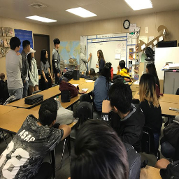
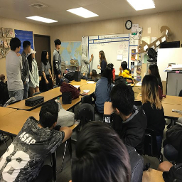
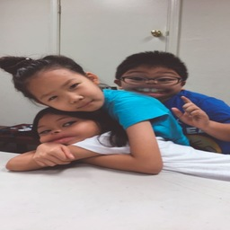
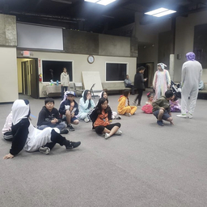
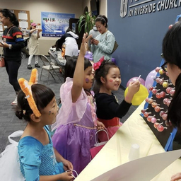
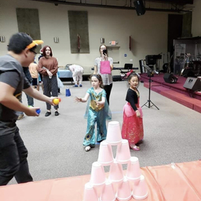
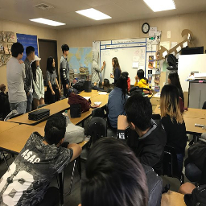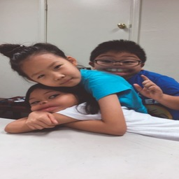 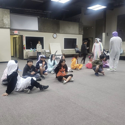
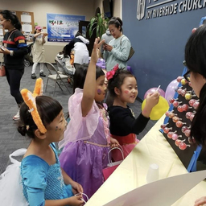 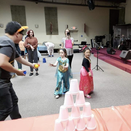